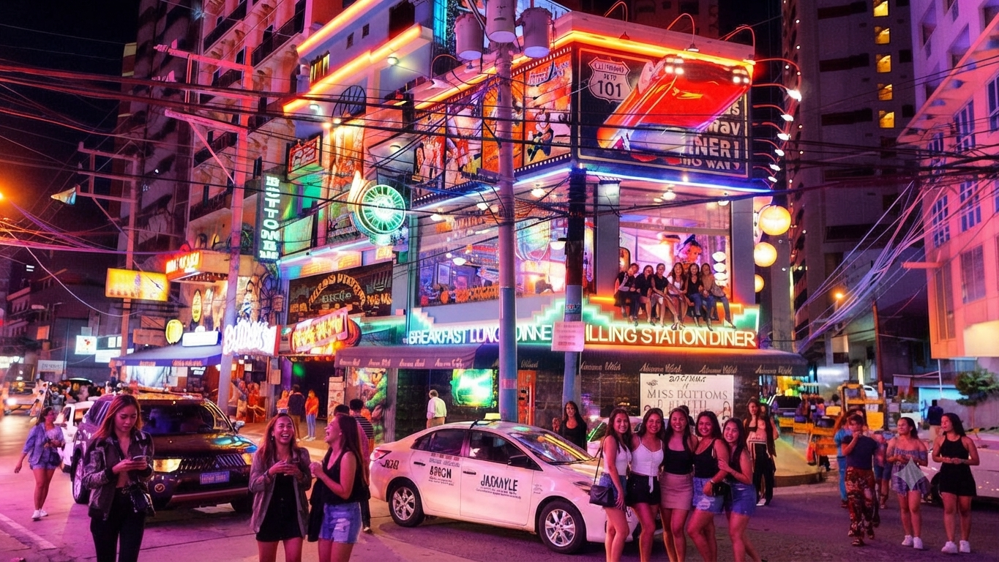

在雪梨的萬家燈火裡，我學會與孤獨對話
打工度假簽證、共居公寓、郵輪上的深夜班表——當所有人都在慶祝自由的同時，我第一次認真面對「一個人」的重量，並學著把孤獨，提煉成自由工作者的內在秩序與創造力。
閱讀全文 →旅途紀行
打工度假簽證、共居公寓、郵輪上的深夜班表——當所有人都在慶祝自由的同時，我第一次認真面對「一個人」的重量，並學著把孤獨，提煉成自由工作者的內在秩序與創造力。
閱讀全文 →
在喧囂、酒精與夜班交織的海外職場裡，我開始練習正念——不是逃離混亂，而是在混亂之中，找到一個從未離開過的安靜角落，守住內心真正的安寧。
閱讀全文 →